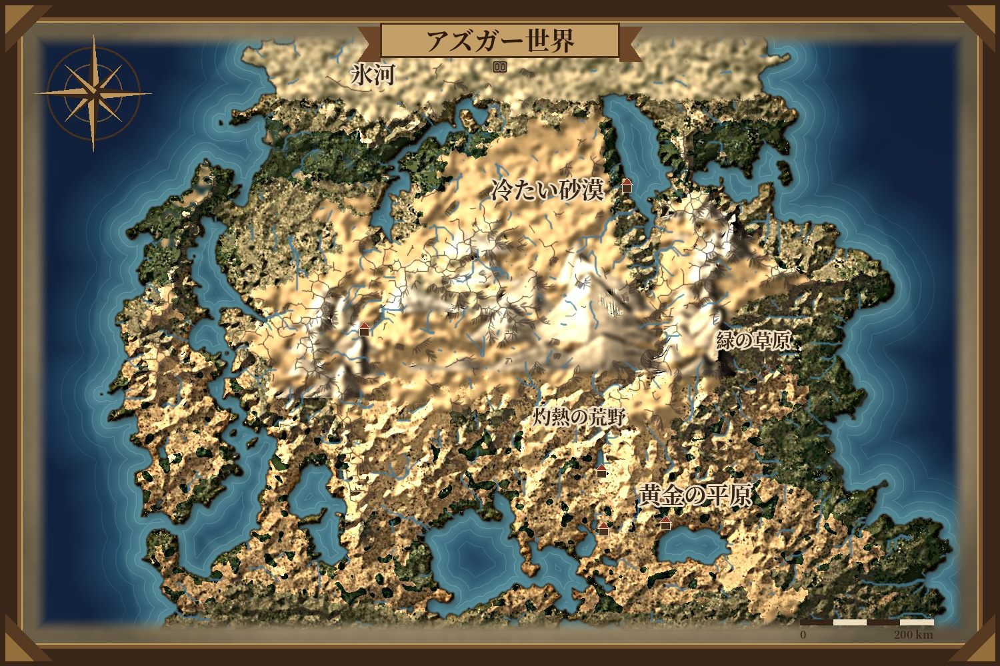
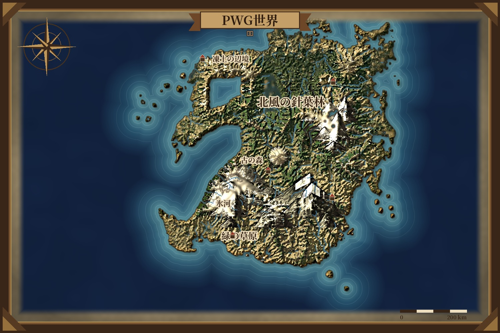
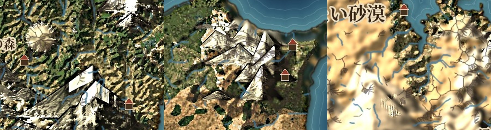

3つの生成器で最新処理を検証
概要: Azgaar・PWG・簡易生成(私が書いた約70行の生成プログラム)の3つで世界を1枚ずつ作り、今の処理(地表→山→稜線つき仕上げ→色彩加算)を世界ごとの手調整なしで当てました。3つとも最後まで通り、処理は1枚あたり約8〜11秒・最大メモリ約770MBで、重くありません。ただし絵の出来にはばらつきがあります(下記)。
出来た絵(色彩加算前)

Azgaar(陸が65%と多く、冷たい砂漠のクリーム色が広い。山はぼやけ気味)

PWG(3つの中で一番まとまっている。ただし一部の山に白い四角)

簡易生成(「二つの大陸」型。海岸は滑らか。山は白い三角の塊。気候の偏りが少ない)
時間とメモリ(このクラウド機での実測・各1回)
| 段階 | Azgaar | PWG | 簡易生成 |
|---|---|---|---|
| 世界を作る | 約3.5秒(約1.7万セル・メモリ約77MB) | 画面生成待ち約29秒+書き出しで計約77秒(ソフト描画・メモリ約246MB) | 約0.7秒 |
| データ形式への変換 | 1.8秒 | 0.5秒 | 不要(直接作る) |
| 地表(段階5) | 2.8秒 | 2.4秒 | 2.1秒 |
| 山(段階14) | 3.5秒 | 2.1秒 | 2.1秒 |
| 仕上げ(稜線・海・枠) | 4.4秒 | 3.0秒 | 4.0秒 |
| 色彩加算 | 0.2秒 | 0.2秒 | 0.2秒 |
| 処理の合計 | 約11秒 | 約8秒 | 約8秒 |
処理側の最大メモリは3つとも約770MB(山の段階が最大)。重いのは処理ではなく、PWGの世界作りです(ブラウザのソフト描画のため)。iPhoneでの実測はしていません。
汎用性の評価(私の目視。判断はユーザーに)

拡大(左=PWG、中=簡易生成、右=Azgaar)
- 通った点: 3つとも、手調整なしの初期値で最後まで動いた。海・岸・川・稜線・枠・ラベルは3つとも出た。
- 弱点1(処理側): 山が、PWGと簡易生成の両方で、直線の辺を持つ白い三角や四角の塊になった(拡大の左・中)。簡易生成は高さが滑らかなので、「高さが平らに頭打ち」説は当たらず、山の絵の描き方そのものの癖と見直しました(訂正)。
- 弱点2(データ側): 簡易生成は川・風と雨・国の自然境界・資源がなく、国は乱数の点からの塗り分け。気候は緯度とノイズだけ。見た目の検証用に限り、シミュレーターの土台には不足。
- 弱点3: Azgaarは国境の線が多く、雪の上の細い網目に見える。冷たい砂漠と氷河が広く、全体がクリーム色で山のコントラストが弱い。
- 色彩加算: 世界5用のプリセットを3枚にそのままかけた(平均で255段階中7〜10ほど変化)。他の世界用の調整はしていないので、効果の良し悪しは未評価。
限界・未確認
- 各1枚だけ(統計にならない)。Azgaarの種は記録していない。PWGは種5101、簡易生成は型1(二つの大陸)。
- 見た目の評価は目視のみで、数値の物差しは使っていない。
- 色彩加算は世界5用の基準のまま。弱点1の山の直しは未着手。
- 最初の版はハニカム地図(world.js)を自作枠に使いましたが、構想から外れるため、簡易生成に差し替えました。PWGの群系28種→12区分は私が寄せた対応で、適切さは未確認。
道具(次から同じ検証を1本で回せる)
手順は README。書き出し: export_az.cjs / export_pwg.cjs / export_simple.py。形式そろえ: rasterize.py(Azgaar) / pwg_convert.py(PWG)。処理: run_pipeline.py(時間とメモリを timing.json に記録)。